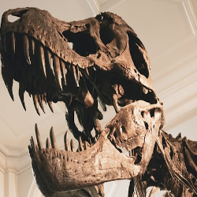

Biology is awesome
Ever asked yourself what is so interesting about Biology? Fear not my dear friend! This is the place where you can find and explore many wonders from the world of Biology
This is all Biology, you dummy

Molecular Biology explores the Molecular world of the living things
Microbiology explores strange world of all living things too small to be seen by naked eye
Botany. This is where the magic happens, world of Photosynthesis

Paleonotology explores the world of a past. Why Dinosaurus dissapeared?
I think every child born on this planet up to the age of about four or five is fascinated by the natural world. If they aren’t it’s because we deprive them of the opportunity. Over half the world’s population is urbanised and the thought that some children may grow up not looking at a pond or knowing how plants grow is a terrible thing. If you lose that delight and joy and intoxication, you’ve lost something hugely precious.
-Sir David Attenborough